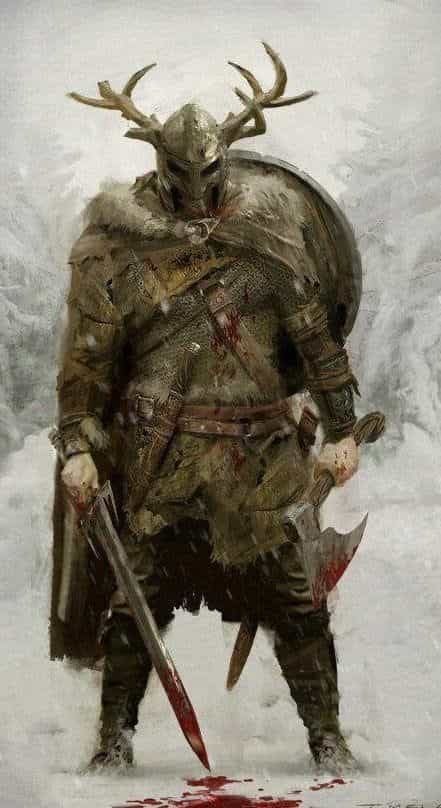

Michael is the author of Staying Married in a Degenerate Age. Follow him on Twitter or Facebook. You can read more of his writing at Honor and Daring.


When you think about self-improvement, you probably immediately think of improving your body—resolving to go to the gym three times per week or to eat a paleo diet. But while your physical body is always the best place to start, you will be incomplete unless you do something more. You can end up being physically fit but spiritually and emotionally stunted.
No matter what spiritual teaching you happen to embrace, whether that is Christianity, Stoicism, or Taoism, a rigorous spiritual program that you practice daily is necessary to truly live your spirituality. If your spirituality is something that you only do once per week, don’t kid yourself—you are not spiritual, you are just LARPing.

I started working on a serious spiritual program about three years ago and I’ve noticed many benefits. The first is that I am much less disturbed by adversity. No matter how difficult things get I have the drive to push through. If I suffer a setback, I am more likely to take it in stride.
Sticking to a spiritual program has made me more organized. Fitting a serious spiritual program on top of an already busy schedule forces you to be disciplined. This discipline naturally flows to other areas of my life. And there is always a feeling of accomplishment at the end of the day.
The third benefit is an increase in self-confidence. There is something about knowing that you are a son of God that puts all of your other relationships into perspective. I now care less about what other people think and this frees me to do things I would have otherwise avoided.
However, the biggest benefit is union with God. You can be a believer but until you become a man of prayer it will never have a real effect on your life. Only prayer activates the Christian life.

Josemaría Escrivá, founder of Opus Dei
The spiritual program I am going to share derives from Opus Dei, a Catholic religious order (technically, it is a “personal prelature”) that aims to help ordinary men and women who live in the world develop deep spirituality. Opus Dei spirituality is particularly applicable to ROK readers because it has a very masculine bent. Opus Dei is one of the few institutions left that understands that men have a need to be masculine and that women need to be feminine.
When you hear about Opus Dei, the first thing that may jump to your mind is Silas, the murderous albino monk from the Da Vinci Code. The reality is a bit more down to earth. The founder of Opus Dei, a Spanish priest named Josemaría Escrivá, felt called by God to create a movement that would help ordinary men and women sanctify themselves through their daily work. In other words, Opus Dei spirituality is meant to be practical. The Catholic Church put its stamp of approval upon Opus Dei and its spirituality by making Escrivá a saint in 2002.
St. Josemaria summarized his spiritual principles in three books of short aphorisms. The following all come from The Way.
Don’t be soft on yourself. “Don’t say: ‘That’s the way I’m made… it’s my character’. It’s your lack of character: Esto vir! Be a man.”
“Where there is no mortification there is no virtue.” (179)
But don’t be hard on others. “Choose mortifications that don’t mortify others.” (180)
Start your day with a victory from the first moment. “The heroic minute. It is the time fixed for getting up. Without hesitation: a supernatural reflection and… up! The heroic minute: here you have a mortification that strengthens your will and does no harm to your body.” (206)
Examine your performance daily. “Examination of conscience: a daily task. Book-keeping is never neglected by anyone in business. And is there any business worth more than the business of eternal life?” (235)
Never surrender in the face of adversity. “What does it matter if you have the whole world against you, with all its power? You… keep going!
Repeat the words of the psalm: ‘The Lord is my light and my salvation: whom need I fear? Si consistant adversum me castra, non timebit cor meum. — Though an army pitched camp against me, my heart shall not be afraid’.” (482)
Remember your divine sonship. “‘Father’, said that big fellow, a good student at the university (I wonder what has become of him), ‘I was thinking of what you told me — that I’m a son of God! — and I found myself walking along the street, head up, chin out, and a proud feeling inside… a son of God!’
With sure conscience I advised him to encourage that ‘pride.’” (274)
Spiritual direction. Opus Dei strongly encourages you find someone with greater wisdom to hold you accountable and guide your spiritual life. My spiritual director is an ancient priest. He does a great job of gently encouraging me to reach a higher level. He’s gradually helping me eliminate all softness from my life. I trust him because I see that he applies his own advice to himself—there is no hint of softness in his character.
When searching for a spiritual director, look for a man who is older than you and has been on the path longer than you. He should demonstrate the efficacy of his teaching in his own life. If someone is a slob, overweight, or otherwise lacks self-control, steer clear of him.
Have a plan of life. “Without a plan of life you will never have order.” (76) The concept of a plan of life is one of the most important concepts of Opus Dei. You must have a consistent bedtime and wake time. You must be punctual in getting to work, going to appointments, and leaving work. And you must focus on whatever you are doing. When you are working, don’t check social media or think about your personal life. On the flipside, don’t let work intrude on your life at home. Live in the moment.
In addition to leading an ordered work and home life, Opus Dei encourages men to have a set number spiritually-related tasks that they accomplish every day. The following program is nondenominational program a based on a program recommended by Opus Dei priest Fr. McCloskey. Use it to serve as a model for your own plan of life.

Make the morning offering upon rising. This is simply raising your mind to God and dedicating the day ahead to him.
Spend 15 minutes in mental prayer in the morning. When you first start out you may find that just sitting quietly for 15 minutes may be a challenge. If you’ve never done mental prayer before, Time for God by Jacques Philippe is an excellent introduction.
Spending fifteen minutes doing spiritual reading. This could be from the Bible or some other suitable spiritual book.
Lift your mind to God in the middle of the day. Catholics do this by praying the Angelus at noon, but your prayer of choice will suffice.
Making a brief examination of conscience at night prior to going to bed.
The key to success with a spiritual program is to be realistic. Unless you are monk, you are not going to be successful using a monk’s spiritual program. Instead, select a set number of tasks that you can achieve every day and be consistent. I’m convinced that if you take the challenge of working on your spiritual life for at least six months, you’ll never go back.
Read More: How To Prepare For Your First Formal Prayer